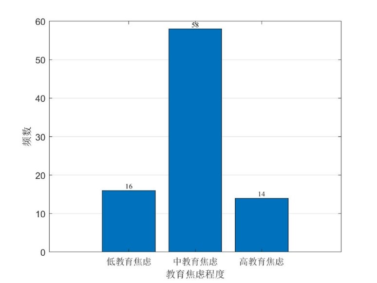
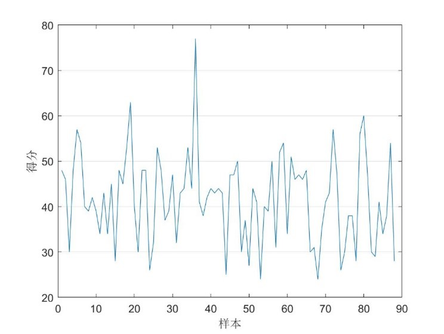
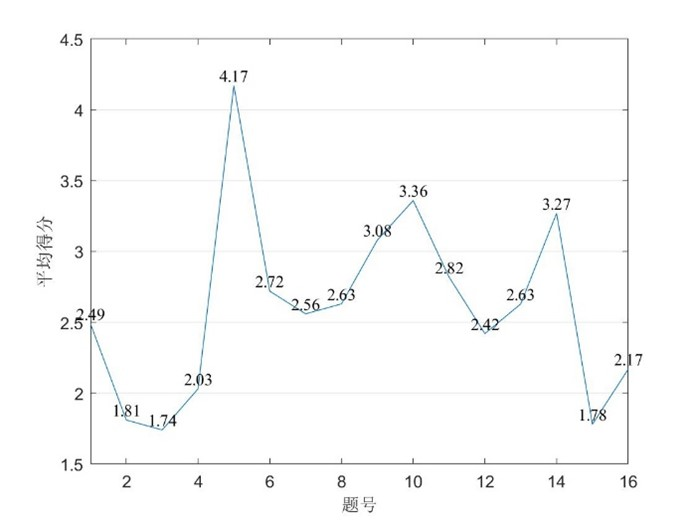

为更好地研究家长不同程度的教育焦虑对学生的积极和消极影响，展开问卷调查研究小学至高中学段学生家长的教育焦虑程度水平。本次前调问卷共发放88份，有效问卷88份。本次调查问卷共设计20道小题，其中背景信息题4道，矩阵量表题16道，每道小题满分为5分。
家长教育焦虑平均得分为41.67（总分80），即家长教育焦虑平均程度为中等偏高教育焦虑。大部分家长的教育焦虑程度为中等水平。数据显示，有16名家长教育焦虑得分在0-30分（即低教育焦虑水平），有58名家长得分在31-50分（即中教育焦虑水平），有14名家长得分在51-80分（即高教育焦虑水平）。并且家长教育焦虑程度水平较集中，但极差较大。数据显示，样本得分标准差为9.84，最高程度教育焦虑家长得分为77分，最低程度教育焦虑得分为24分。
 |
 |
（1）学习、兴趣班方面
第6、7、9、10、11、17、18小题与孩子的学习、兴趣班方面相关，平均得分为2.70。其中“关注孩子的成绩，干预孩子的学习状态”平均分最高，为4.17分，表明大部分家长对孩子的学习成绩焦虑程度更高，会主动了解孩子的学习情况、学习态度，通过为孩子制定学习计划、报名补习班等方式干预孩子的学习。
第6、7、9、10、11、17、18小题与孩子的学习、兴趣班方面相关，平均得分为2.70。其中“关注孩子的成绩，干预孩子的学习状态”平均分最高，为4.17分，表明大部分家长对孩子的学习成绩焦虑程度更高，会主动了解孩子的学习情况、学习态度，通过为孩子制定学习计划、报名补习班等方式干预孩子的学习。
（2）升学、学校质量方面
第12、13、14小题与孩子的升学、学校质量相关，是家长最关心、担心的问题，平均得分为3.03。其中“担心孩子不能升入理想学校”、“升学问题上干预孩子的选择”的平均分分别为3.08、3.36，表明大部分家长对孩子的升学问题焦虑程度更高。
第12、13、14小题与孩子的升学、学校质量相关，是家长最关心、担心的问题，平均得分为3.03。其中“担心孩子不能升入理想学校”、“升学问题上干预孩子的选择”的平均分分别为3.08、3.36，表明大部分家长对孩子的升学问题焦虑程度更高。
（3）同龄人比较
第5、8、15小题与家长是否将孩子与同龄孩子比较相关，平均得分为2.45，表明部分家长会在成绩、努力程度等方面将孩子与同龄孩子对比，但不会过多担忧、焦虑孩子落后于朋友或他人。
第5、8、15小题与家长是否将孩子与同龄孩子比较相关，平均得分为2.45，表明部分家长会在成绩、努力程度等方面将孩子与同龄孩子对比，但不会过多担忧、焦虑孩子落后于朋友或他人。
（4）家长教育焦虑的外显行为
第16、19、20小题与家长对孩子教育焦虑在家长日常生活中的外显行为相关，平均得分为2.17，大部分家长表示“孩子的教育问题没有填满其生活”、“不会因为孩子的教育问题整夜失眠”，表明大部分家长对孩子的教育问题焦虑程度不高，未严重影响家长的日常生活。
第16、19、20小题与家长对孩子教育焦虑在家长日常生活中的外显行为相关，平均得分为2.17，大部分家长表示“孩子的教育问题没有填满其生活”、“不会因为孩子的教育问题整夜失眠”，表明大部分家长对孩子的教育问题焦虑程度不高，未严重影响家长的日常生活。

（1）大部分家长的教育焦虑程度为中等水平，家长教育焦虑平均程度为中等偏高教育焦虑；
（2）大部分家长对孩子的升学问题、学习成绩的焦虑程度较高。
（2）大部分家长对孩子的升学问题、学习成绩的焦虑程度较高。